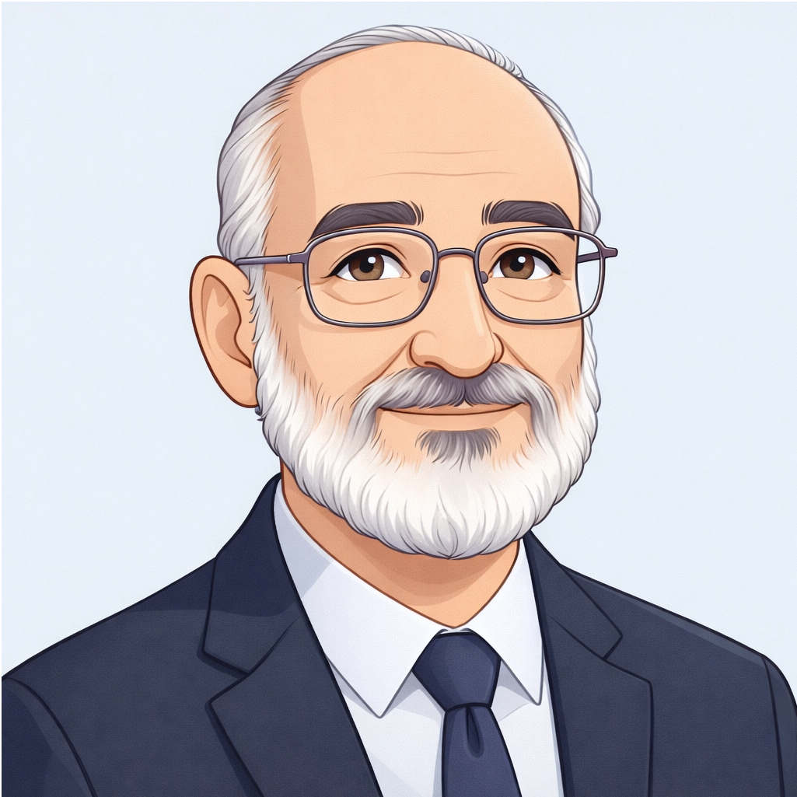

V2 - Galeria de Agentes com a Wanda
Use as setas ou ESPAÇO para navegar • Seta para baixo abre o Deep Dive
🔊 Clique no botão de som (canto inferior direito) para ativar a narração da Wanda
Integração clínica, segurança e decisão coordenada
Análise clínica baseada em evidências
Monitoramento longitudinal extensível via Disease Profiles YAML
Arquitetura V4 (EF pronta):
Exemplo de resposta estruturada:
Contexto territorial e rede assistencial brasileira
Continuidade de cuidado e vínculo com o paciente

Qualidade assistencial e governança por indicadores
Explore os agentes, sistemas e conexões do IntelliCare
Inteligência artificial coordenada para o cuidado em saúde
Coordenação inteligente para decisões mais seguras